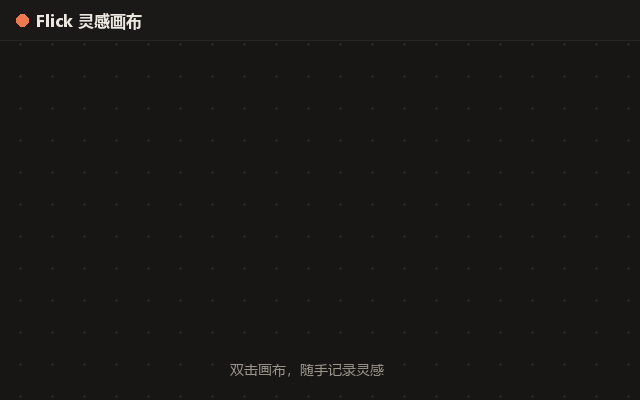
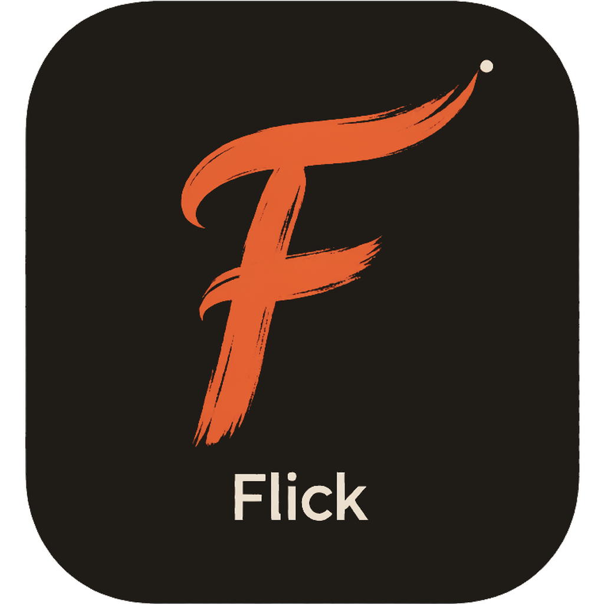
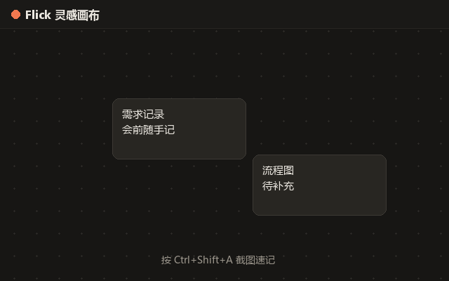
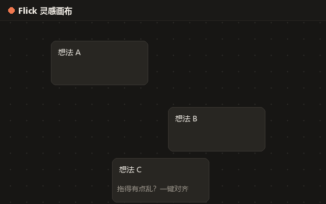

demo-1.gif请把 GIF 放到 assets/flick/
无限画布
双击随手记录，文字、图片、截图都在同一块画布。

一句话定位：Flick 是一个轻量 Windows 无限画布速记工具，用快捷键随手截图、粘贴灵感、快速整理。
三秒看懂 Flick 怎么用

双击随手记录，文字、图片、截图都在同一块画布。

Ctrl+Shift+A 截图，自动贴到画布，不用切来切去。

选中多个节点，Shift+O / Shift+P 快速对齐排版。
v1.1.0 · Windows 10 / 11 · x64
标准安装，可设置开机自启，适合日常主力机。
下载安装包默认快捷键，可在设置中修改
* 快捷键为 Flick v1.1.0 默认设置，可在“快捷键”面板中修改。
来自第一批内测用户
“开会时随手截图贴到画布，比聊天记录好用多了。”
“无限画布很适合头脑风暴，不用来回开文档。”
“快捷键很跟手，Ctrl+Space 呼出已经成肌肉记忆了。”